正規表現勉強会
今日の目的
- まず正規表現のありがたさを知るべし！
- ゼロから一緒にハンズオンをしよう！
デモ
はじめに
正規表現とは？
- 検索 (⌘+F) の進化系のようなものです
- 置換にも使えます
普通の検索
普通の検索は完全一致。
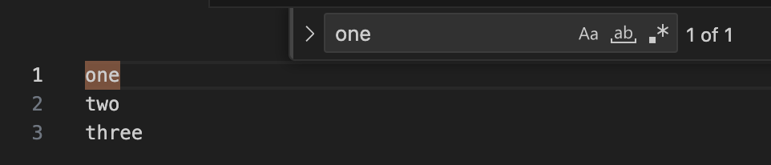
正規表現で検索
いろんな文字を同時にマッチできます。

置換
一括で置換できます。
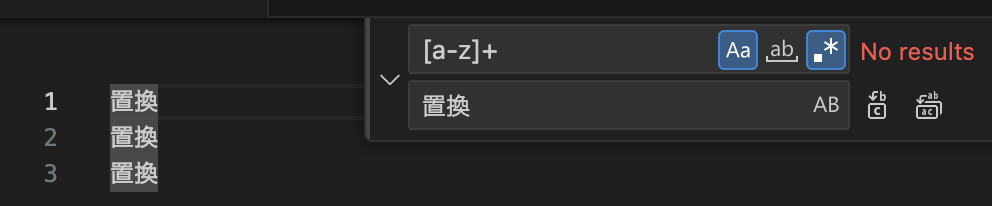
準備
- VSCode でやります
⌘+Fで検索窓を開こう- ↓の通りにボタンを押す
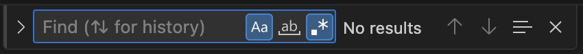
記法
完全一致
正規表現でも、普通の検索と同じように完全一致できます。
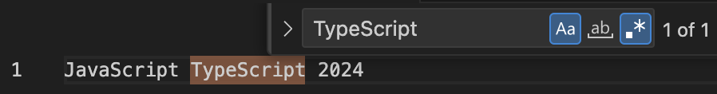
完全一致
ワード Script は、2箇所でマッチ。
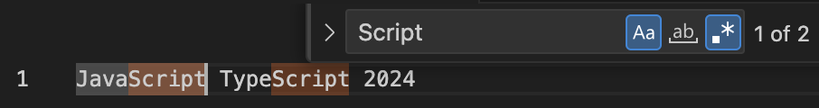
. → 任意の文字
検索文字 . は、あらゆる１文字にマッチ。
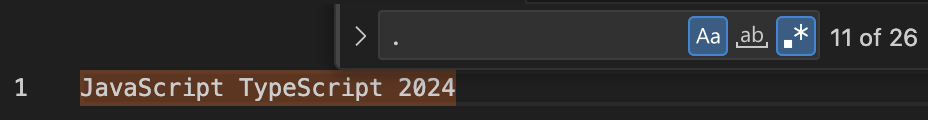
文字 a で置換するとこうなる。
aaaaaaaaaaaaaaaaaaaaaaaaaa
. → 任意の文字
検索ワード ....Script は、JavaScript と TypeScript の両方にマッチ。
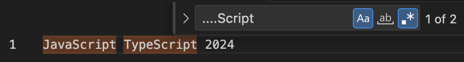
^ → 行頭
- 検索文字
^は、行頭にマッチ。 - 検索ワードが行頭に来たケースのみをマッチできる。
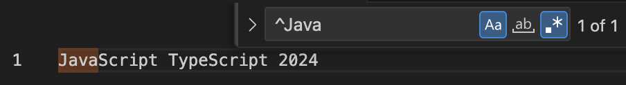
^ → 行頭
TypeScript は行頭に来てないので ^Type はマッチしない！

$ → 行末
検索文字 $ は、行末にマッチ。

[…] → どれか１文字
文字 a, b, c にマッチ。
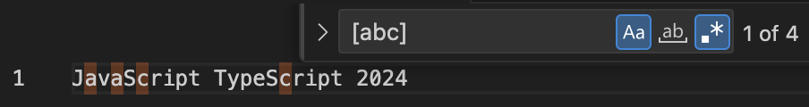
[…] → どれか１文字
無理やり数字にマッチさせるとこう。

[…] → どれか１文字
ハイフンでまとめて指定できます。(小文字)

[…] → どれか１文字
ハイフンでまとめて指定できます。(大文字)
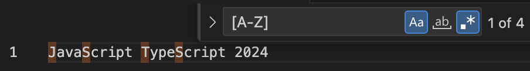
[…] → どれか１文字
ハイフンでまとめて指定できます。(数字)
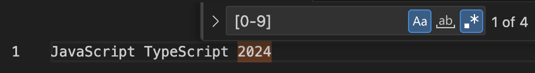
[^…] → どれでもない１文字
- 逆に指定した文字のうち どれでもない１文字 にマッチもできます。
- ↓例は 数字以外 の文字にマッチ
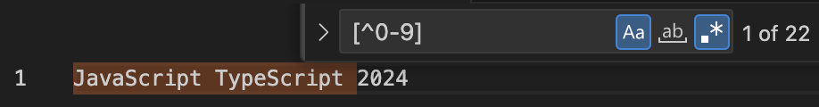
+ → 繰り返し
+直前の文字の繰り返しにマッチ- ↓例は
aの後にbが１回以上続くケースにマッチ
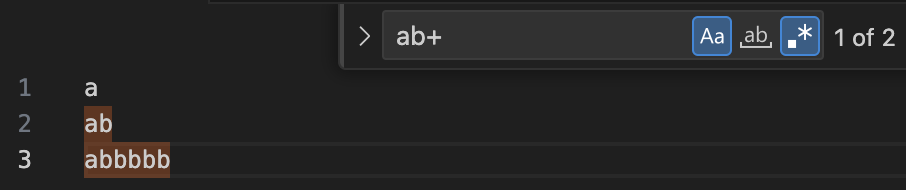
* → 繰り返し
*は+と同じく、直前の文字の繰り返しにマッチ*は+と異なり０回 (ないこと) にもマッチする

* → 繰り返し
- 文字
aの間に「bが０回ある」という事実にマッチしている… - ※これが正規表現の理解が難しい所

↓ (置換)
_a_a_a_
(…)+ → ワードの繰り返し
グループ (...) を使えば、ワードの繰り返しにもマッチできます。

(…|…) → ワードのOR
グループ (...|...) を使えば、複数ワードのどれかにマッチできます。

エスケープ
特殊記号はエスケープが必要
- 前述した特殊記号は
abcの様に普通にマッチはできない。 \を使ってエスケープをすると文字としてマッチできる。
. → \.
^ → \^
$ → \$
[ → \[
] → \]
+ → \+
* → \*
( → \(
) → \)
| → \|
特殊記号はエスケープが必要
- それか
[...]を使う技もある。 - この中では
],-以外はエススケープが不要。
[.^$+*()|]
置換
普通の置換

普通の置換

奥義！ キャプチャグループ！
Taro,Hanako,Mikeにマッチする正規表現[A-Za-z]+が丸括弧で囲まれています

奥義！ キャプチャグループ！
- 置換後の文字列では
$1がそれぞれTaro,Hanako,Mikeに置き換わりました - 丸括弧が複数ある場合は順に、
$1,$2,$3… で参照します

なぜ $1 なのか？ \1 は？
- VSCode は Electron という JavaScript Framework で作られています
- → VSCode の正規表現の仕様は JavaScript 標準

先・後読みは説明しないが…
- 次の様に書いて置換すると、マッチしない行をまとめて消せる ので便利
^(?!.*残したいワード).*\n
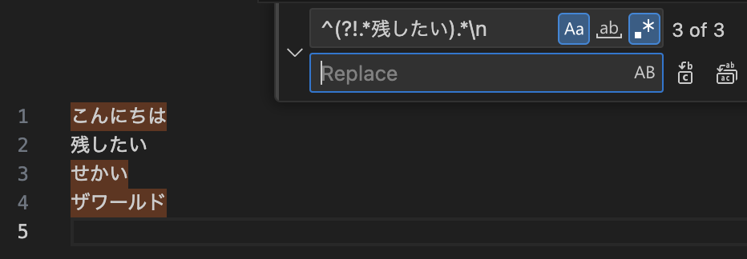
その他、ツール類
https://regex101.com/

ChatGPT

演習
探す
- 次のアクセスログからエラーログ (4XX) を正規表現でマッチさせよう
- エラーログ (4XX, 5XX) の両方をマッチさせよう
- (Want・難) 4XX, 5XX にマッチだけにフィルタ
[info] 2023-03-15 10:15:30 - GET /some/path - 200 OK - 123ms
[error] 2023-03-20 08:20:15 - GET /no/such/path - 404 Not Found - 456ms
[error] 2023-03-20 12:00:03 - POST /some/path - 500 Internal Server Error - 111ms
[error] 2023-03-21 23:55:55 - GET /some/path - 401 Anauthorized - 10ms
消す
- 末尾の秒数(ms)だけを残して、手前は消してみよう
[info] 2023-03-15 10:15:30 - GET /some/path - 200 OK - 123ms
[error] 2023-03-20 08:20:15 - GET /no/such/path - 404 Not Found - 456ms
[error] 2023-03-20 12:00:03 - POST /some/path - 500 Internal Server Error - 111ms
[error] 2023-03-21 23:55:55 - GET /some/path - 401 Anauthorized - 10ms
↓ (置換)
123ms
456ms
111ms
10ms
一部だけ抜き出す
- 次の文字列はWebアプリケーションのログです。DockerのJSONログ形式で出力されています。
"log"JSONキーが示す値のみを抜き出して見ましょう。 (json unescape は不要)
{ "log": "[info] 2023-03-15 10:15:30 - GET /some/path - 200 OK - 123ms", "stream": "stdout", "time": "2023-03-15T10:15:30.123456789Z" }
{ "log": "[error] 2023-03-20 08:20:15 - GET /no/such/path - 404 Not Found - 456ms", "stream": "stdout", "time": "2023-03-20T08:20:15.333333333Z" }
↓ (置換)
[info] 2023-03-15 10:15:30 - GET /some/path - 200 OK - 123ms
[error] 2023-03-20 08:20:15 - GET /no/such/path - 404 Not Found - 456ms
一部だけ抜き出す
- (前ページからの続きです)
- CSV形式に整形しましょう。表示順は 日時 → log_level → 本文 の順です。
[info] 2023-03-15 10:15:30 - GET /some/path - 200 OK - 123ms
[error] 2023-03-20 08:20:15 - GET /no/such/path - 404 Not Found - 456ms
↓ (置換)
2023-03-15 10:15:30,info,GET /some/path - 200 OK - 123ms
2023-03-20 08:20:15,error,GET /no/such/path - 404 Not Found - 456ms